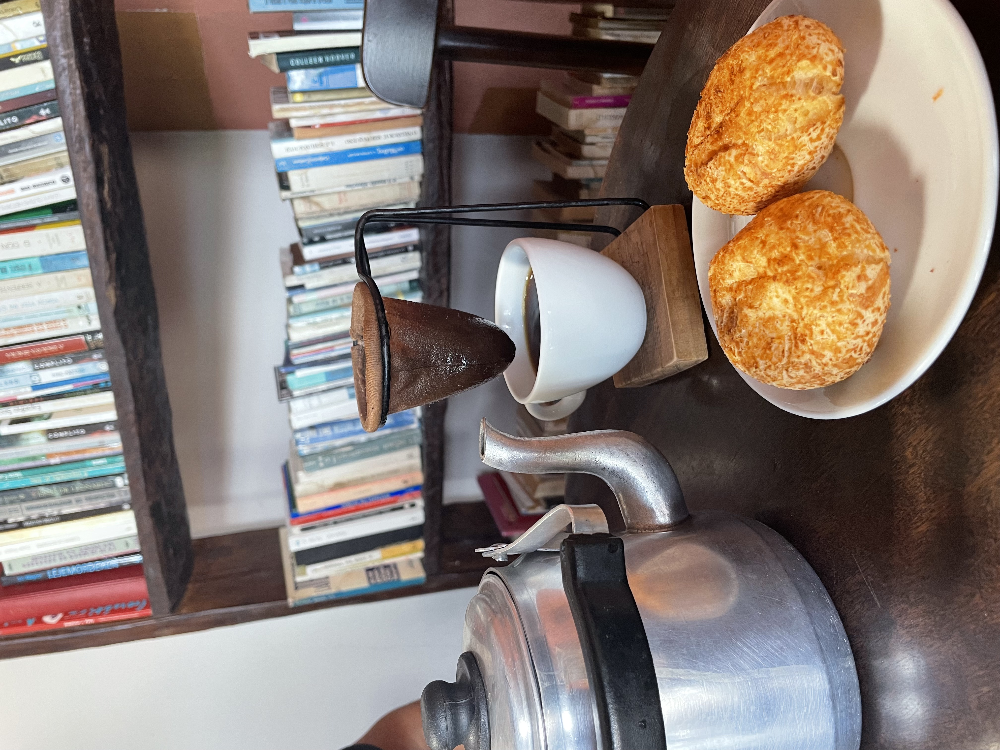
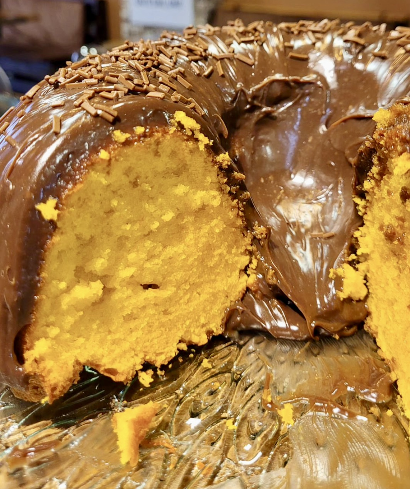
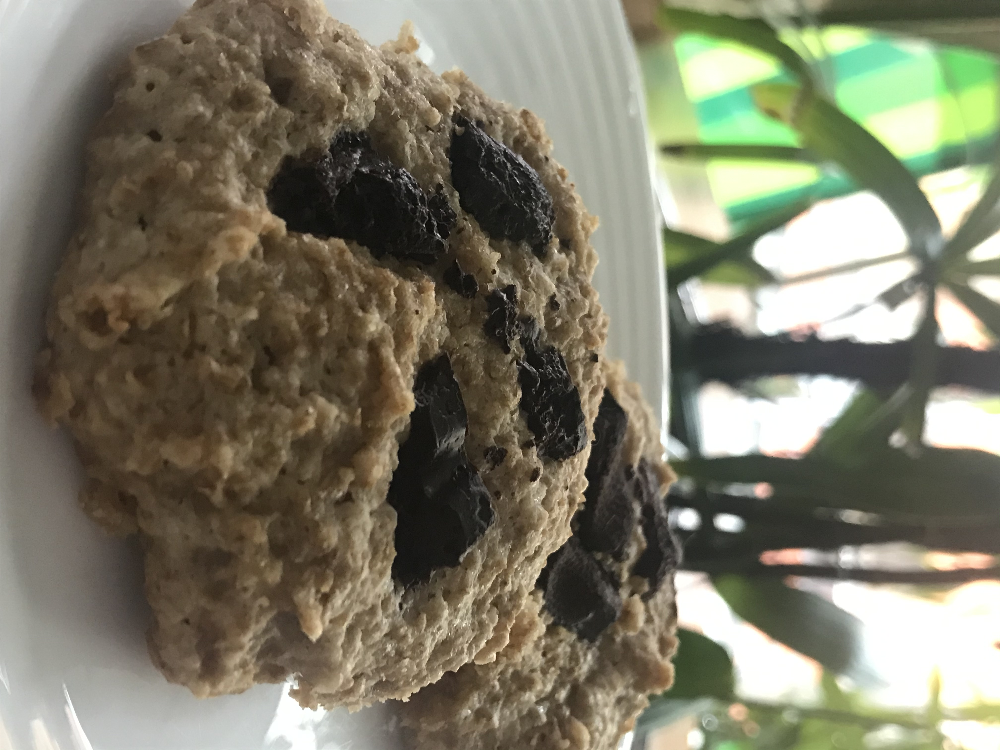
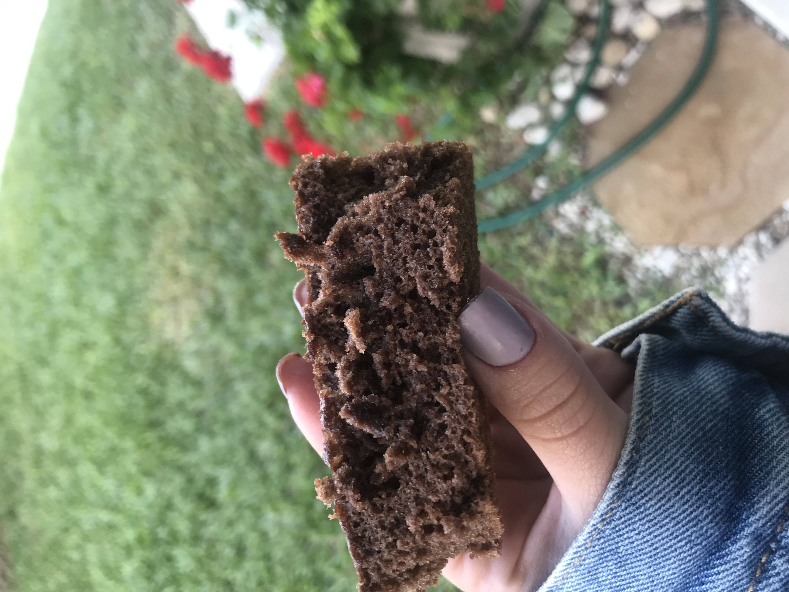

Qual o melhor acompanhamento para o seu cafézinho? Veja abaixo as melhores opções.
Um bom café fica ainda melhor quando acompanhado de algo especial. Selecionamos algumas opções que combinam perfeitamente com diferentes perfis de café, valorizando sabores, texturas e aromas.
Clássico da culinária brasileira, o pão de queijo combina uma casquinha levemente crocante com um interior macio e saboroso. Seu sabor equilibrado harmoniza muito bem com cafés de perfil mais doce.
Sugestão do Nika: Café Sul de Minas 85 pontos — equilibrado, com notas suaves de chocolate.

Um bolo macio e levemente adocicado, coberto com uma camada cremosa de chocolate. A combinação de sabores torna esse acompanhamento perfeito para momentos de pausa e apreciação.
Sugestão do Nika: Café Espresso Nika — intenso, encorpado e perfeito para contrastar com a doçura do bolo.

Crocante por fora e macio por dentro, o cookie de chocolate é um acompanhamento clássico que combina muito bem com cafés aromáticos. Ideal para quem gosta de equilibrar o amargor do café com um toque de doçura.
Sugestão do Nika: Café filtrado no V60 — mais aromático e delicado, destacando as notas do grão.

Denso, úmido e intensamente chocolatoso, o brownie é perfeito para acompanhar cafés mais encorpados. Uma combinação que destaca sabores profundos e cria uma experiência marcante.
Sugestão do Nika: Café Espresso Nika — encorpado e intenso, equilibrando perfeitamente o chocolate.
